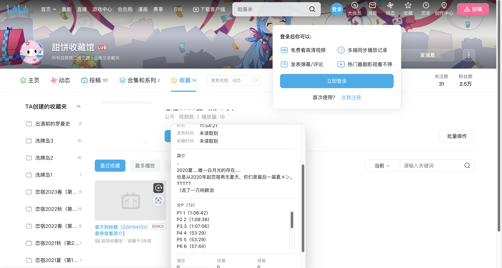
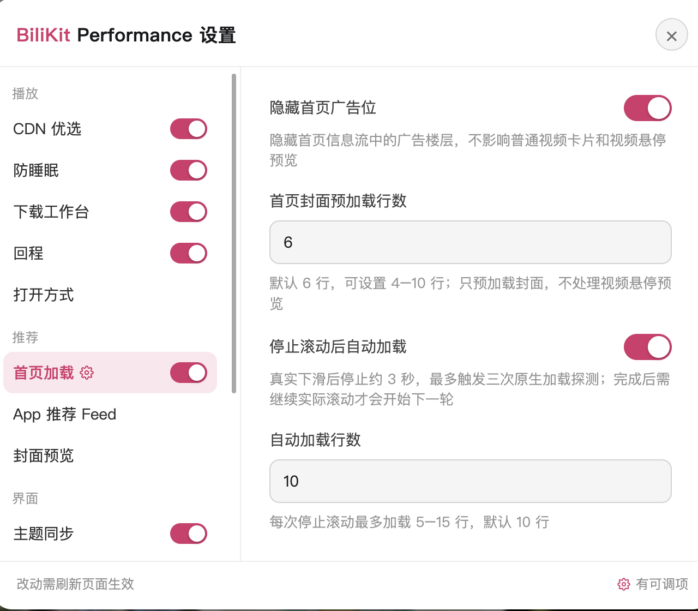

首页信息流
首屏更快，下滑更稳。
- 页面加载初期预连接常用接口和图片域名
- 提升推荐接口优先级，可见封面优先加载，视口下方预加载 4–10 行
- 默认隐藏广告楼层，不影响普通视频卡片
- 停止下滑约 3 秒后自动加载后续内容
- 修正网格错位、抖动和频闪

让 B 站加载更快、下载更顺手的 userscript
面向 Bilibili 的 Edge / Chromium userscript。优化首页、搜索页和播放页的网络调度与 CDN 使用，并在播放器右键菜单中提供下载工作台。
首屏更快，下滑更稳。
根据地域和实测结果选择图片与播放节点。
在播放器右键菜单中打开，默认选中当前视频和当前分 P。
为“已失效视频”找回能确认的信息。

按自己的习惯打开和切换视频。
点击首页右下角的齿轮打开，每个模块都可以单独开关。

如果装过旧版 BiliKit Core，请先停用它，避免两个脚本同时修改页面。